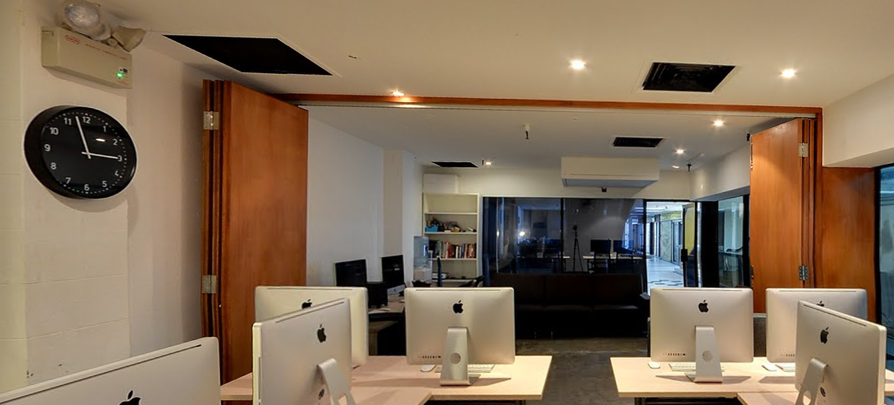
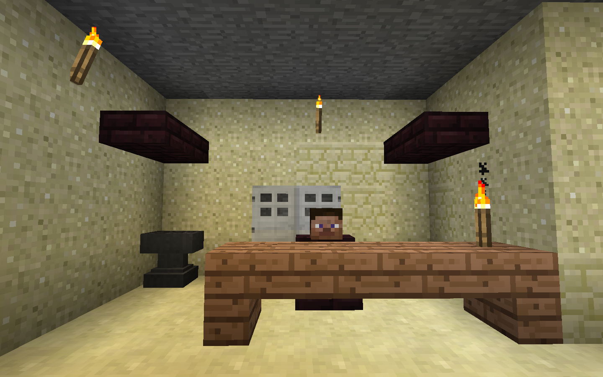

Atmosphr
The world’s first time-invariant travel system.
Think Interstellar, for tourism. Excited yet?
Atmosphr allows you to see the place not just as it is right now, but as it was at any point in time. We achieve this with special viewing glasses that allow you to experience virtual reality.
Simply place a phone running Atmosphr into the glasses and be taken down memory lane. Imagine immersing yourself in fireworks on New Year’s Eve at Marina Bay, or revelling in Christmas decorations along Orchard Road.
Share an experience like no other.
Atmosphr is supported by Singapore Tourism Board’s official panorama library, but to make the possibilities truly endless, Atmosphr also supports user-submitted panoramas.
To submit a panorama, simply drag it into the cloud above!
We use and recommend Google’s Photo Sphere app.
Atmosphr makes it really easy to find places to go. Search for a place, or choose from our recommended list, and you can decide for yourself if you want to see it in person.
Spotlight of the Week:
Awesomy
Awesomy was set up in 2012 by couples Henry and Lisa Tham, in a cozy spot along Cuscaden Road. It’s a cool place to hang out in the city and a favourite haunt for Singapore’s growing population of hipsters.

Check out Awesomy on Atmosphr!
Atmosphr’s API, Atmosphric, makes it really easy to customize itself to work on-location. It comes with full support for NFC and ad-hoc wifi networks, which are useful for indoor locations with weak reception, or users with limited mobile data.
Check out Singapore History Consultant’s work on using Atmosphric to augment visitors’ experience to Battle Box in Fort Canning!

Wifi access points are stategically placed in each war room of the Battle Box to serve assets. When visitors visit each room, they can use Atmosphr via NFC to experience the war room as it was back in 1942.

Get started as an Atmosphr developer:
Atmosphric is also available on brew and npm:
brew install atm
npm install -g atm